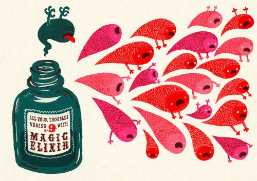
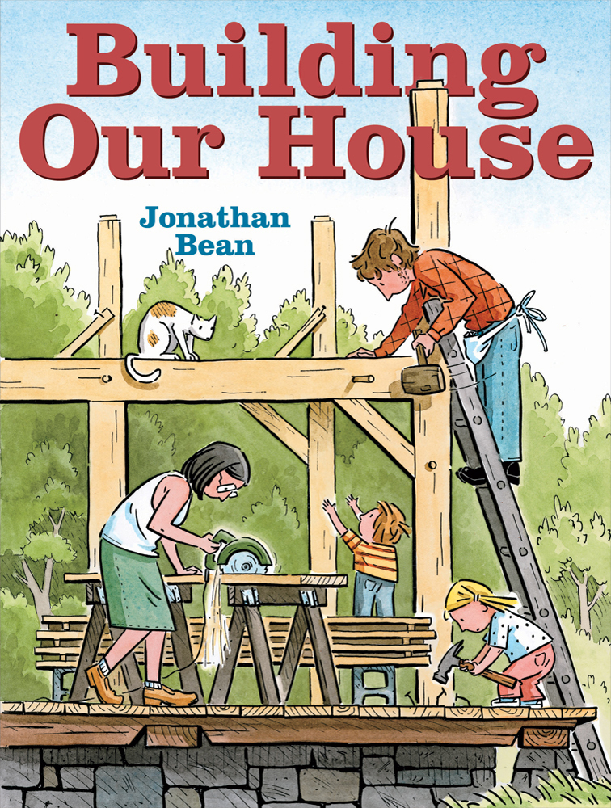
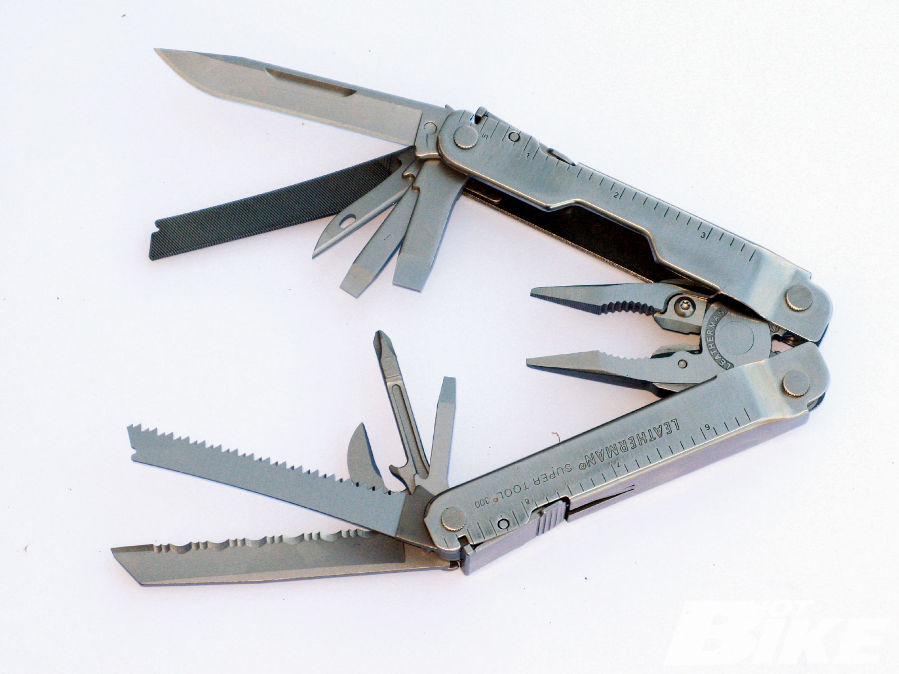
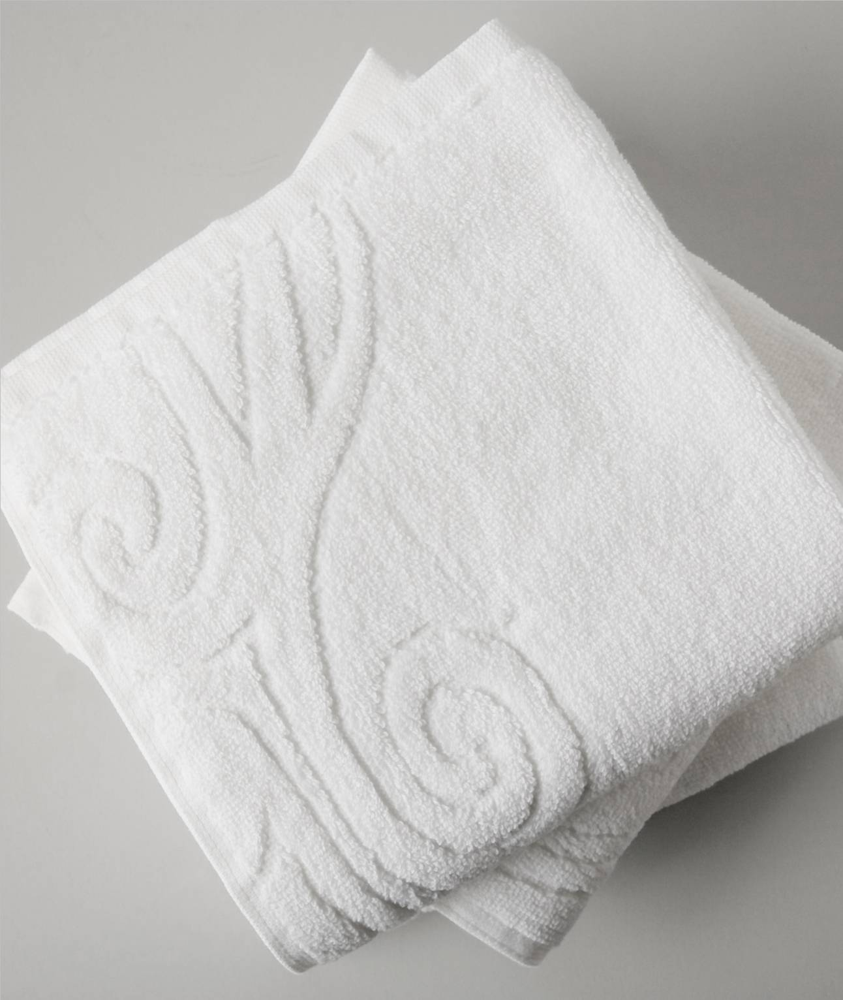
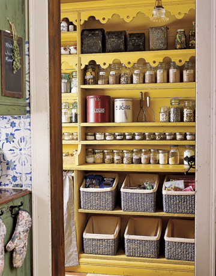

Responsible jQuery
adam j. sontag
February 5, 2013
Take it from me, jQuery is truly the greatest thing since sliced bread!
Why, I'd rather change my name to Quay Jeery than use jQuery!
Big Fan of Sandwiches:
- jQuery "changed the way" I write JavaScript
- Obscured away the "hard parts" of problems
- DOM Traversal & Manipulation
- Events
- AJAX
- Able to move away from a bunch of named global functions and `onclick=` to writing unobtrusive apps
Holder of Strong Opinions:
- "Unobtrusive? Not on my eyes!"
- Hard to maintain
- Difficult to talk about
- Disorganized
- Slow
- Monolithic
jQuery is not an elixir!

But …
jQuery is not the enemy!
jQuery is just a tool!
Building a web app is kind of like building a house
- You have to use many different tools
- You have to build the foundation before you start wiring
jQuery is a multitool
- Useful, versatile for all skill levels
- Sometimes it does the entire task
- Other times, it helps you work the other tools better
- You can't build an entire house with it!
- Well, you can, but it would be unsafe and you wouldn't want to live in it!
jQuery is just a global constructor with a bunch of handy static methods attached
jQuery Objects
$("div"); // Looks like a 'magic invocation'
jQuery("div"); // Looks like a good ol' function call
new jQuery("div"); // What's 'actually happening'
In all cases, you get back a jQuery object, an array-like structure that's like much sugarier version of a DOM NodeList.
All for one, one for all
jQuery unifies the experience of:
- Working with exactly 1 element as many elements
- Working new elements the same as old elements
// Next element sibling of one element with an ID
$("#onlyOne").next();
// Next element sibling of all elements with a class
$(".lots").next();
// A brand new element
$("<div>Hello World</div>");
Each of these returns an object with the same exact interface
Think of jQuery objects as a basic building block of your application
A note on DRY

It's not just about avoiding writing duplicative
code, it's about not repeating unnecessary
actions. (And jQuery() is an
action!)
Don't construct things you don't plan to use
It would be fairly strange to encounter something like the following:
JSON.parse( str ); // or new RegExp( "^"+str, "ig" ); // or isNaN( "blarg" );
because when you create things in JavaScript, you typically use a variable so you can actually use them later.
var myObj = JSON.parse( str ); // or var rDynamic = new RegExp( "^"+str, "ig" ); // or var valid = !isNaN( "blarg" );
When it comes to jQuery, people seem to forget this
JS BinAlways™ Cache Your jQuery Selections
All you're doing is calling a function with a useful return value … use it!
var $articles = $("article");
// In fact, because most jQuery methods return a jQuery object, this works as well
var $articles = $("article").click( fn );
// Once you have one collection, use it as the basis for other queries
var $img = $articles.find("img");
Don't repeat actions, even if they are "cheap"
// Bad
$("a").click(function(e) {
$(this).addClass("active");
$(this).parent().siblings().find("a").removeClass("active");
var o = $(this).offset();
});
// Better
$("a").click(function(e) {
var $t = $(this),
o = $t.offset();
$t.addClass("active");
$t.parent().siblings().find("a").removeClass("active");
});
Where Can I Save jQuery Objects
As variables:
var $friends = $(".friend");
As properties of objects:
var catApp = {
$cats: $(".cat"),
init: function() {
this.$cats.click( catClicked )
},
catClicked: function(e) {
alert("'Meow', said " + $(e.target).data("name") );
}
};
Caching selectors can make your app faster, but more importantly, it makes it better organized and easier to talk about!
jQuery is JavaScript, but so is JavaScript
Hey, who you callin' an idiom?
- There are often idiomatic patterns for common jQuery use cases
- However, there are also native JS or DOM solutions as well
- Don't use jQuery for everything just because it's there
$("a").click(function(e) {
// Bad
var id = $(this).attr("id");
// Good
var id = this.id;
});
Don't waste time looking for "The jQuery Equivalent" of Math.round, parseInt, etc. — you've already found it.
Getting Organized
Keeping your code organized by using well-named objects, short functions, and jQuery collections is the single best "best practice" I can share with you today

The stereotypical "jQuery Application" with lots of anonymous functions, "anonymous" collections, and a heavy dependence on selectors can quickly devolve into a Choose Your Own Adventure Story About The DOM with no beginning, middle, or end.
The DOM is not your application, it is the visible manifestation of your application.
Put up the walls of your house before you try to paint them.
More than words: A simple request wrapper
jQuery.ajaxmakes Ajax approachable and dead-simple to implement- In a larger app, many of your Ajax requests have the same characteristics
- How can you DRY up those shared characteristics and give yourself an "in" for configuring all your requests?
- jQuery provides things like ajaxSetup as well as prefilters and transports
- But these can leave jQuery in charge
- …which would be fine if it was named Charles, but I digress…
Who's the Boss? You!
var CATS = {
serviceUrl: "http://eso.teric.api.com/path/morepath/",
requestDefaults: {
breed: "tabby",
dataType: "jsonp",
data: {
token: "$up3r$3(r37"
}
},
request: function( options ) {
options = $.extend( true, {}, this.requestDefaults, options );
options.url = this.serviceURL + options.breed;
return $.ajax( options );
}
}
CATS.request({
breed: "siamese",
fatness: "fat",
success: function(data) {
// Add the cats into a list in the DOM
}
});
I .promise(), I'm almost done!
jQuery.ajax works like a Deferred, which means:
- Our service returns something useful (a promise)
- We can have more than one callback, and it doesn't have to be attached at call time (late binding)
- We can easily group requests and pass them around
// Add a logging function to all successful requests
CATS.requestDefaults.success = function(data) {
console.log( "Cats Fetched Successfully:", data );
};
// Before jQuery 1.5, this would have been clobbered by our own callback
// But now we can attach our "consumer" callbacks later, and both will get called
CATS.request({breed: "siberian"}).done(function(data) {
// Add the cats into a list in the DOM
});
// Or wait for multiple sets to finish
var r = CATS.request({breed: "ragamuffin"}),
m = CATS.request({breed: "manx"}) );
$.when( r, m ).done(function(rags, manx) {
// I have so many cats I don't know what to do with them
// But probably putting them in a list in the DOM is a good idea
});
Thanks!
- adam j. sontag
- adam dot sontag at jquery dot com
- @ajpiano
- I'm ajpiano on the #jquery channels on freenode IRC
- Bocoup
- my blog